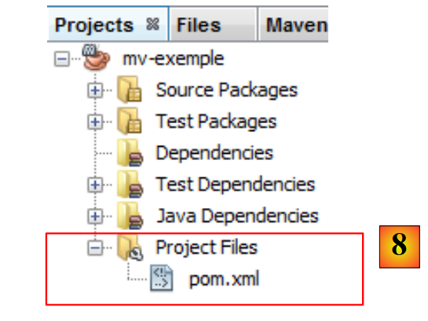
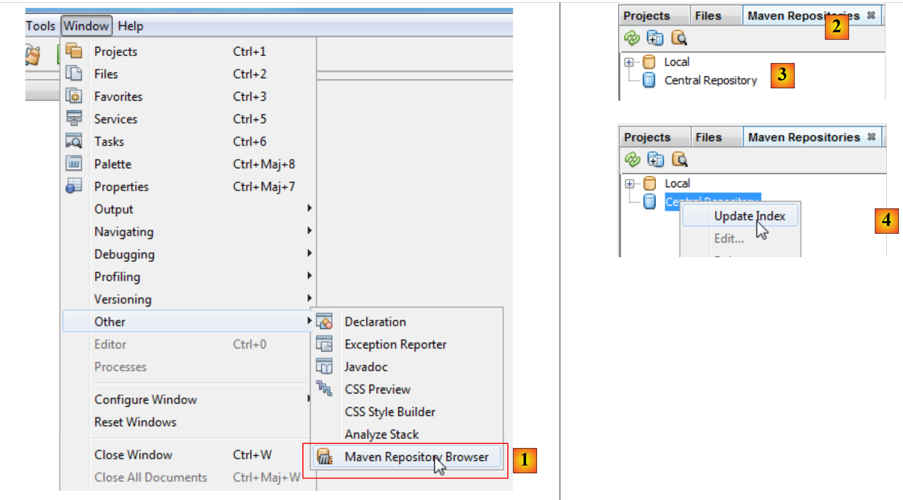
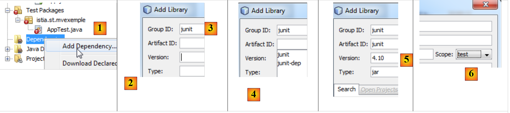
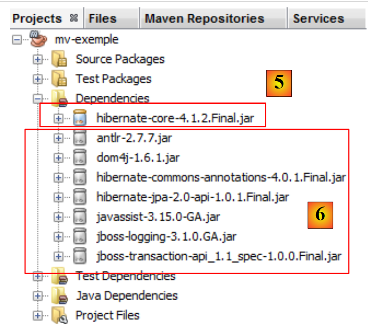

3. أدوات الوثيقة
تم اختبار الأمثلة الواردة في الوثيقة باستخدام الأدوات التالية:
- Netbeans من الإصدار 6.8 إلى الإصدار 7.1.2. يرد وصف تثبيت Netbeans في [ref3] في الفقرة 1.3.1.
- Wampserver الإصدار 2.2. يرد وصف تثبيت WampServer في [ref3] في الفقرة 1.3.3؛
- Maven مدمج في Netbeans. سنقوم الآن بوصف هذه الأداة.
3.1. Maven
3.1.1. مقدمة
Maven متاح في URL [http://maven.apache.org/index.html ]. وفقًا لمبدعيه:
الهدف الأساسي لـ Maven هو السماح للمطور بفهم الحالة الكاملة لعملية التطوير في أقصر فترة زمنية ممكنة. من أجل تحقيق هذا الهدف، هناك عدة مجالات اهتمام يحاول Maven التعامل معها:
- تسهيل عملية البناء
- توفير نظام بناء موحد
- توفير معلومات عالية الجودة عن المشروع
- توفير إرشادات لأفضل ممارسات التطوير
- تمكين الانتقال الشفاف إلى الميزات الجديدة
يتم تضمين Maven في NetBeans وسنستخدمه لغرض واحد فقط: إدارة مكتبات المشروع. تتكون هذه المكتبات من مجموعة ملفات jars التي يجب أن تكون موجودة في مجلد Classpath الخاص بالمشروع. وقد يكون عددها كبيرًا جدًا. على سبيل المثال، ستستخدم مشاريعنا المستقبلية أرشيف Hibernate (Object Relational Mapper). يتكون هذا الأرشيف من عشرات الأرشيفات. ميزة Maven هي أنه يغفرنا من معرفة كل هذه الملفات. يكفي أن نشير في مشروعنا إلى أننا بحاجة إلى Hibernate مع تقديم جميع المعلومات المفيدة للعثور على الأرشيف الرئيسي لهذا ORM. يقوم Maven بعد ذلك بتنزيل جميع المكتبات اللازمة لـ Hibernate. ويُطلق على ذلك اسم تبعيات Hibernate. قد تعتمد مكتبة ضرورية لـ Hibernate بدورها على أرشيفات أخرى. وسيتم تنزيل هذه الأرشيفات أيضًا. يتم وضع جميع هذه المكتبات في مجلد يُسمى مستودع Maven المحلي.
يمكن مشاركة مشروع Maven بسهولة. إذا تم نقله من جهاز إلى آخر ولم تكن تبعيات المشروع موجودة في المستودع المحلي للجهاز الجديد، فسيتم تنزيلها.
يمكن استخدام Maven بمفرده أو دمجه في بيئة تطوير متكاملة (IDE) مثل Netbeans أو Eclipse.
لنقم بإنشاء مشروع Maven في Netbeans:
 |
- في [1]، قم بإنشاء مشروع جديد،
- في [2]، اختر الفئة [Maven] ونوع المشروع [Java Application]،
 |
- في [3]، حدد المجلد الأصلي لمجلد المشروع الجديد،
- في [4]، قم بتسمية المشروع،
- في [5]، المشروع الذي تم إنشاؤه.
دعونا نستعرض عناصر المشروع ونوضح دور كل منها.
 |
- في [1]: الفروع المختلفة للمشروع:
- [Source packages]: فئات Java للمشروع؛
- [Test packages]: فئات الاختبار الخاصة بالمشروع؛
- [Dependencies]: أرشيفات .jar اللازمة للمشروع والتي تديرها Maven؛
- [Test Dependencies]: ملفات .jar اللازمة لاختبارات المشروع والتي يديرها Maven؛
- [Java Dependencies]: ملفات .jar الضرورية للمشروع والتي لا يديرها Maven؛
- [Project Files]: ملفات تكوين Maven و Netbeans،
 |
- في [3]، الفرع [Source Packages]،
يحتوي هذا الفرع على أكواد المصدر لفئات Java الخاصة بالمشروع. قام Netbeans بإنشاء فئة افتراضية:
package istia.st.mvexemple;
/**
* Hello world!
*
*/
public class App {
public static void main(String[] args) {
System.out.println("Hello World!");
}
}
 |
- في [4]، الفرع [Test Packages] الذي يحتوي على أكواد مصدر فئات الاختبار للمشروع،
- إلى [5]، ومكتبة JUnit 3.8 اللازمة لتنفيذ الاختبارات،
قام Netbeans بإنشاء فئة افتراضية:
package istia.st.mvexemple;
import junit.framework.Test;
import junit.framework.TestCase;
import junit.framework.TestSuite;
/**
* Unit test for simple App.
*/
public class AppTest extends TestCase {
/**
* Create the test case
*
* @param testName
* name of the test case
*/
public AppTest(String testName) {
super(testName);
}
/**
* @return the suite of tests being tested
*/
public static Test suite() {
return new TestSuite(AppTest.class);
}
/**
* Rigourous Test :-)
*/
public void testApp() {
assertTrue(true);
}
}
هذا اختبار JUnit 3.8. سنستخدم لاحقًا اختبارات JUnit 4.x.
 |
- في [6]، فرع [Dependencies] فارغ هنا،
يعرض هذا الفرع جميع المكتبات اللازمة للمشروع والتي يديرها Maven. يتم تنزيل جميع المكتبات المدرجة هنا تلقائيًا بواسطة Maven. ولهذا السبب يحتاج مشروع Maven إلى اتصال بالإنترنت. سيتم تخزين المكتبات التي تم تنزيلها محليًا. إذا احتاج مشروع آخر إلى مكتبة موجودة بالفعل محليًا، فلن يتم تنزيلها. سنرى أن قائمة المكتبات هذه وكذلك المستودعات التي يمكن العثور عليها فيها محددة في ملف تكوين مشروع Maven.
 |
- في [7]، المكتبات اللازمة للمشروع والتي لا يديرها Maven،
 |
- في [7]، ملف [pom.xml] لتكوين مشروع Maven. POM تعني Project Object Model. سنضطر إلى التدخل مباشرة في هذا الملف.
الملف [pom.xml] الذي تم إنشاؤه هو التالي:
<project xmlns="http://maven.apache.org/POM/4.0.0" xmlns:xsi="http://www.w3.org/2001/XMLSchema-instance"
xsi:schemaLocation="http://maven.apache.org/POM/4.0.0 http://maven.apache.org/xsd/maven-4.0.0.xsd">
<modelVersion>4.0.0</modelVersion>
<groupId>istia.st</groupId>
<artifactId>mv-exemple</artifactId>
<version>1.0-SNAPSHOT</version>
<packaging>jar</packaging>
<name>mv-exemple</name>
<url>http://maven.apache.org</url>
<properties>
<project.build.sourceEncoding>UTF-8</project.build.sourceEncoding>
</properties>
<dependencies>
<dependency>
<groupId>junit</groupId>
<artifactId>junit</artifactId>
<version>3.8.1</version>
<scope>test</scope>
</dependency>
</dependencies>
</project>
- تحدد الأسطر 5-8 كائن (أداة) Java الذي سيتم إنشاؤه بواسطة مشروع Maven. تأتي هذه المعلومات من المساعد الذي تم استخدامه عند إنشاء المشروع:
 |
يتم تعريف كائن Maven بأربع خصائص:
- [groupId]: معلومة تشبه اسم الحزمة. وبالتالي، فإن مكتبات إطار عمل Spring لها groupId=org.springframework، ومكتبات إطار العمل JSF لها groupId=javax.faces،
- [artifactId]: اسم كائن Maven. في المجموعة [org.springframework] نجد إذن artifactId التالية: spring-context، spring-core، spring-beans، ... في المجموعة [javax.faces]، نجد artifactId و jsf-api,
- [version]: رقم إصدار عنصر Maven. وبالتالي، فإن الأرتيفاكت org.springframework.spring-core له الإصدارات التالية: 2.5.4، 2.5.5، 2.5.6، 2.5.6.SECO1، ...
- [packaging]: الشكل الذي يتخذه الأرتيفاكت، وغالبًا ما يكون war أو jar.
سيقوم مشروع Maven الخاص بنا بإنشاء [jar] (السطر 8) ضمن المجموعة [istia.st] (السطر 5)، باسم [mv-exemple] (السطر 6) وإصدار [1.0-SNAPSHOT] (السطر 7). يجب أن تحدد هذه المعلومات الأربع بشكل فريد أحد منتجات Maven.
تسرد الأسطر 17-24 تبعيات مشروع Maven، أي قائمة المكتبات اللازمة للمشروع. يتم تعريف كل مكتبة من خلال أربعة عناصر (groupId، artifactId، الإصدار، التعبئة). عندما تكون المعلومات packaging غائبة كما هو الحال هنا، يتم استخدام ملف jar packaging. نضيف معلومة أخرى، وهي النطاق (scope) الذي يحدد في أي مراحل من عمر المشروع نحتاج إلى المكتبة. القيمة الافتراضية هي compile، مما يشير إلى أن المكتبة ضرورية للتجميع والتنفيذ. تعني القيمة test أن المكتبة ضرورية أثناء اختبار المشروع. وهذا هو الحال هنا مع المكتبة JUnit 3.8.1. إذا لم تكن هذه المكتبة موجودة في مستودع الجهاز المحلي، يتم تنزيلها.
3.1.2. تنفيذ المشروع
نقوم بتنفيذ المشروع:
 |
في [1]، يتم إنشاء مشروع Maven ثم تنفيذه [1]. السجلات في وحدة التحكم Netbeans هي كما يلي:
النتيجة هي السطر 23. نرى أنه حتى في هذه الحالة البسيطة، قام Maven بتنزيل عناصر (السطران 17 و20).
3.1.3. نظام الملفات في مشروع Maven
 |
- [1]: نظام ملفات المشروع موجود في علامة التبويب [Files]،
- [2]: توجد مصادر Java في المجلد [src / main / java]،
- [3]: مصادر Java للاختبارات موجودة في المجلد [src / test / java]،
- [4]: تم إنشاء المجلد [target] بواسطة عملية بناء (build) المشروع،
- [5]: هنا، أنشأ بناء المشروع أرشيفًا باسم [mv-exemple-1.0-SNAPSHOT.jar].
3.1.4. مستودع Maven المحلي
ذكرنا أن Maven يقوم بتنزيل التبعيات اللازمة للمشروع وتخزينها محليًا. يمكن استكشاف هذا المستودع المحلي:
 |
- في [1]، نختار الخيار [Window / Other / Maven Repository Browser]،
- في [2]، تفتح علامة تبويب [Maven Repositories]،
- في [3]، يحتوي على فرعين، أحدهما للمستودع المحلي، والآخر للمستودع المركزي. هذا الأخير ضخم للغاية. لعرض محتواه، يجب تحديث فهرسه [4]. يستغرق هذا التحديث عدة عشرات من الدقائق.
 |
- في [5]، مكتبات المستودع المحلي،
- في [6]، نجد فرعًا [istia.st] الذي يتوافق مع [groupId] لمشروعنا،
- في [7]، يمكن الوصول إلى خصائص المستودع المحلي،
- في [8]، لدينا مسار المستودع المحلي. من المفيد معرفته لأنه في بعض الأحيان (نادرًا) لا يستخدم Maven أحدث إصدار من المشروع. نقوم بإجراء تعديلات ونلاحظ أنها لم تؤخذ في الاعتبار. يمكننا عندئذ حذف الفرع من المستودع المحلي الذي يتوافق مع [groupId] يدويًا. هذا يجبر Maven على إعادة إنشاء الفرع من أحدث إصدار للمشروع.
3.1.5. البحث عن أداة مع Maven
لنتعلم الآن كيفية البحث عن أداة باستخدام Maven. لنبدأ من قائمة التبعيات الحالية لملف [pom.xml]:
<project xmlns="http://maven.apache.org/POM/4.0.0" xmlns:xsi="http://www.w3.org/2001/XMLSchema-instance"
xsi:schemaLocation="http://maven.apache.org/POM/4.0.0 http://maven.apache.org/xsd/maven-4.0.0.xsd">
<modelVersion>4.0.0</modelVersion>
<groupId>istia.st</groupId>
<artifactId>mv-exemple</artifactId>
<version>1.0-SNAPSHOT</version>
<packaging>jar</packaging>
<name>mv-exemple</name>
<url>http://maven.apache.org</url>
<properties>
<project.build.sourceEncoding>UTF-8</project.build.sourceEncoding>
</properties>
<dependencies>
<dependency>
<groupId>junit</groupId>
<artifactId>junit</artifactId>
<version>3.8.1</version>
<scope>test</scope>
</dependency>
</dependencies>
</project>
تحدد الأسطر 17-23 التبعيات التي سنقوم بتعديلها لاستخدام المكتبات في أحدث إصداراتها.
 |
أولاً، نحذف التبعيات الحالية [1]. ثم يتم تعديل الملف [pom.xml]:
<project xmlns="http://maven.apache.org/POM/4.0.0" xmlns:xsi="http://www.w3.org/2001/XMLSchema-instance"
xsi:schemaLocation="http://maven.apache.org/POM/4.0.0 http://maven.apache.org/xsd/maven-4.0.0.xsd">
<modelVersion>4.0.0</modelVersion>
<groupId>istia.st</groupId>
<artifactId>mv-exemple</artifactId>
<version>1.0-SNAPSHOT</version>
<packaging>jar</packaging>
<name>mv-exemple</name>
<url>http://maven.apache.org</url>
<properties>
<project.build.sourceEncoding>UTF-8</project.build.sourceEncoding>
</properties>
<dependencies></dependencies>
</project>
السطر 17، لم تعد التبعية المحذوفة تظهر في [pom.xml]. والآن، لنبحث عنها في مستودعات Maven.
 |
- في [1]، نضيف تبعية إلى المشروع،
- في [2]، يجب تحديد معلومات حول الأرتيفاكت المطلوب (groupId، artifactId، الإصدار، التعبئة (النوع) والنطاق). نبدأ بتحديد [groupId] [3]،
- في [4]، نكتب [espace] لعرض قائمة العناصر المحتملة. هنا [junit] و [jnit-dep]. نختار [junit]،
- في [5]، وبالطريقة نفسها، نختار أحدث إصدار. نوع الحزمة هو jar,
- إلى [6]، نختار نطاق الاختبار للإشارة إلى أن التبعية ضرورية للاختبارات فقط.
 |
في [6]، تظهر التبعيات المضافة في المشروع. يعكس الملف [pom.xml] هذه التغييرات:
<project xmlns="http://maven.apache.org/POM/4.0.0" xmlns:xsi="http://www.w3.org/2001/XMLSchema-instance"
xsi:schemaLocation="http://maven.apache.org/POM/4.0.0 http://maven.apache.org/xsd/maven-4.0.0.xsd">
<modelVersion>4.0.0</modelVersion>
<groupId>istia.st</groupId>
<artifactId>mv-exemple</artifactId>
<version>1.0-SNAPSHOT</version>
<packaging>jar</packaging>
<name>mv-exemple</name>
<url>http://maven.apache.org</url>
<properties>
<project.build.sourceEncoding>UTF-8</project.build.sourceEncoding>
</properties>
<dependencies>
<dependency>
<groupId>junit</groupId>
<artifactId>junit</artifactId>
<version>4.10</version>
<scope>test</scope>
<type>jar</type>
</dependency>
</dependencies>
</project>
تجدر الإشارة إلى أن الملف [pom.xml] لا يذكر التبعية [hamcrest-core-1.1] التي نراها في [6]. وذلك لأنها تبعية لـ JUnit 4.10 وليست للمشروع نفسه. ويُشار إلى ذلك برمز مختلف في الفرع [Dependencies]. وقد تم تنزيلها تلقائيًا.
لنفترض الآن أننا لا نعرف [groupId] الخاص بالمنتج الذي نريده. على سبيل المثال، نريد استخدام Hibernate كـ ORM (Object Relational Mapper) وهذا كل ما نعرفه. يمكننا عندئذٍ الانتقال إلى موقع [http://mvnrepository.com/]:
 |
في [1]، يمكننا كتابة كلمات رئيسية. لنكتب hibernate ونبدأ البحث.
 |
- في [2]، نختار [groupId] org.hibernate و [artifactId] hibernate-core،
- في [3]، نختار الإصدار 4.1.2-Final،
- في [4]، نحصل على كود Maven لنلصقه في الملف [pom.xml]. نقوم بذلك.
<project xmlns="http://maven.apache.org/POM/4.0.0" xmlns:xsi="http://www.w3.org/2001/XMLSchema-instance"
xsi:schemaLocation="http://maven.apache.org/POM/4.0.0 http://maven.apache.org/xsd/maven-4.0.0.xsd">
<modelVersion>4.0.0</modelVersion>
<groupId>istia.st</groupId>
<artifactId>mv-exemple</artifactId>
<version>1.0-SNAPSHOT</version>
<packaging>jar</packaging>
<name>mv-exemple</name>
<url>http://maven.apache.org</url>
<properties>
<project.build.sourceEncoding>UTF-8</project.build.sourceEncoding>
</properties>
<dependencies>
<dependency>
<groupId>junit</groupId>
<artifactId>junit</artifactId>
<version>4.10</version>
<scope>test</scope>
<type>jar</type>
</dependency>
<dependency>
<groupId>org.hibernate</groupId>
<artifactId>hibernate-core</artifactId>
<version>4.1.2.Final</version>
</dependency>
</dependencies>
</project>
نقوم بحفظ الملف [pom.xml]. ثم يشرع Maven في تنزيل التبعيات الجديدة. ويتطور المشروع على النحو التالي:
 |
- إلى [5]، التبعية [hibernate-core-4.1.2-Final]. في المستودع الذي تم العثور عليه فيه، يتم وصف هذا الملف [artifactId] أيضًا بواسطة ملف [pom.xml]. تمت قراءة هذا الملف واكتشف Maven أن [artifactId] له تبعيات. يقوم بتنزيلها أيضًا. وسيقوم بذلك لكل ملف [artifactId] تم تنزيله. في النهاية، نجد في [6] تبعيات لم نطلبها مباشرة. يتم تمييزها برمز مختلف عن رمز ملف [artifactId] الرئيسي.
في هذا المستند، نستخدم Maven بشكل أساسي لهذه الميزة. فهذا يوفر علينا معرفة جميع التبعيات الخاصة بمكتبة نريد استخدامها. نترك لـ Maven إدارة هذه التبعيات. علاوة على ذلك، عند مشاركة ملف [pom.xml] بين المطورين، نضمن أن كل مطور يستخدم بالفعل نفس المكتبات.
في الأمثلة التالية، سنكتفي بتقديم الملف [pom.xml] المستخدم. ما على القارئ سوى استخدامه ليكون في نفس ظروف الوثيقة. علاوة على ذلك، يتم التعرف على مشاريع Maven من قبل برامج Java الرئيسية (Eclipse، Netbeans، IntelliJ، JDeveloper). وبالتالي، يمكن للقارئ استخدام IDE المفضل لديه لاختبار الأمثلة.